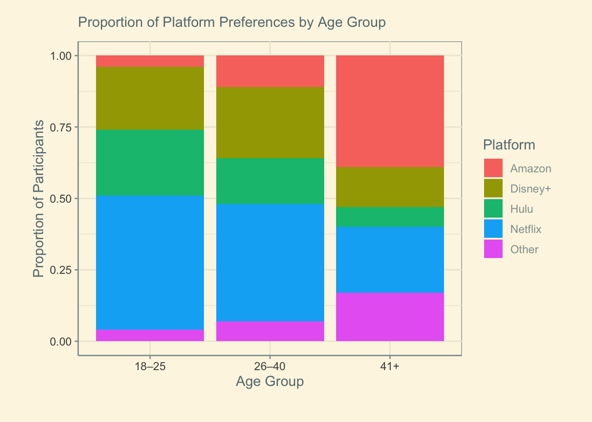
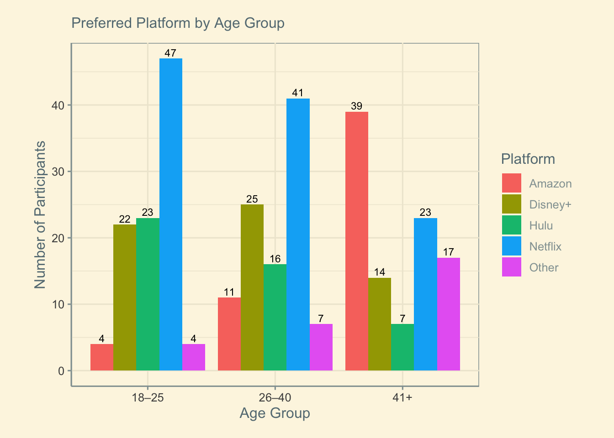
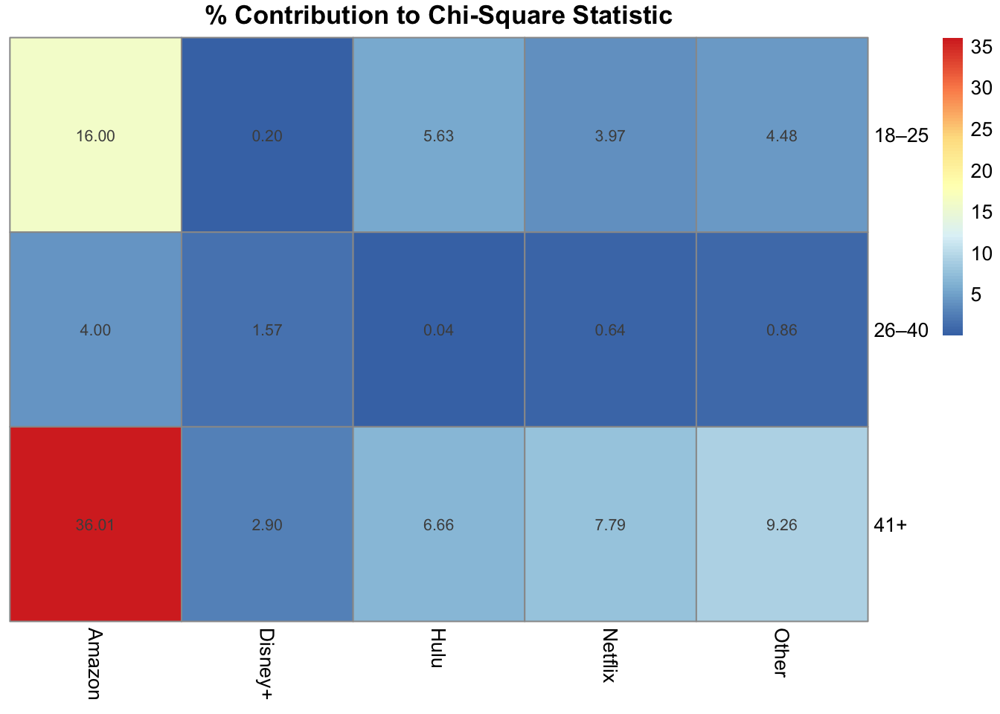

library(readxl)
library(tidyverse)
library(ggthemes)
library(skimr)
library(ggplot2)
library(patchwork)
library(rcompanion)
library(pheatmap)
library(knitr)Assignment 6 - Streaming Analytics
Introduction
I have been hired as a Data Analyst for The Streaming Analytics Division (SAD). I have been tasked with uncovering whether age group influences people’s preferred streaming platform.
The company wants to know if certain platforms (like Netflix, Hulu, Disney+, or Amazon) appeal more to specific age demographics. I am hoping my analysis will help guide targeted marketing, promotional strategies, and content investment decisions that align with audience preferences.
Using simulated survey data, I will conduct a reproducible R Markdown analysis to determine whether Platform Preference and Age Category are related. I will identify which age–platform combinations contribute most to any significant differences and assess the strength of the relationship using Cramer’s V.
Step 1: Data Preparation
I have been provided a dataset representing survey responses from people of three age groups: 18–25, 26–40, and 41+. Each respondent selected their preferred streaming platform from the following options: Netflix, Hulu, Disney+, Amazon, and Other.
streaming_data <- read_xlsx("Streaming Services and Age.xlsx")
count(streaming_data)# A tibble: 1 × 1
n
<int>
1 300c_table<- table(streaming_data)kable(c_table)| Amazon | Disney+ | Hulu | Netflix | Other | |
|---|---|---|---|---|---|
| 18–25 | 4 | 22 | 23 | 47 | 4 |
| 26–40 | 11 | 25 | 16 | 41 | 7 |
| 41+ | 39 | 14 | 7 | 23 | 17 |
Step 2: Visualization
Stacked Bar Chart & Clustered Bar Chart
stacked <- ggplot(streaming_data, aes(x = AgeCat, fill = Platform)) +
geom_bar(position = "fill") +
labs(
title = "Proportion of Platform Preferences by Age Group",
y = "Proportion of Participants",
x = "Age Group"
) +
theme_solarized() +
theme(
plot.margin = unit(c(0.5, 1, 1, 1), "cm"),
plot.title = element_text(size = 12, margin = margin(b = 10))
)
clustered <- ggplot(streaming_data, aes(x = AgeCat, fill = Platform)) +
geom_bar(position = "dodge") +
geom_text(
stat = "count",
aes(label = after_stat(count)),
position = position_dodge(width = 0.9),
vjust = -0.3,
size = 3
) +
labs(
title = "Preferred Platform by Age Group",
x = "Age Group",
y = "Number of Participants",
fill = "Platform"
) +
theme_solarized() +
theme(
plot.margin = unit(c(0.5, 1, 0.5, 1), "cm"),
plot.title = element_text(size = 12, margin = margin(b = 10))
)stacked
clustered
Step 3: Chi-Square Test of Independence
chi_square_test<- chisq.test(c_table)
chi_square_test
Pearson's Chi-squared test
data: c_table
X-squared = 68.044, df = 8, p-value = 1.203e-11The Chi-Square statistic (χ²) = 68.044
Degrees of freedom (df) = 8
The p-value = 1.203e-11 (statistically significant)
This test indicates that the relationship between age and platform preference is statistically significant.
Step 4: Observed, Expected, and Residual Values
Observed counts
The actual frequencies in our dataset:
observed<- chi_square_test$observedkable(observed)| Amazon | Disney+ | Hulu | Netflix | Other | |
|---|---|---|---|---|---|
| 18–25 | 4 | 22 | 23 | 47 | 4 |
| 26–40 | 11 | 25 | 16 | 41 | 7 |
| 41+ | 39 | 14 | 7 | 23 | 17 |
Expected counts
What we would expect if age and platform were independent:
expected<- chi_square_test$expectedkable(expected)| Amazon | Disney+ | Hulu | Netflix | Other | |
|---|---|---|---|---|---|
| 18–25 | 18 | 20.33333 | 15.33333 | 37 | 9.333333 |
| 26–40 | 18 | 20.33333 | 15.33333 | 37 | 9.333333 |
| 41+ | 18 | 20.33333 | 15.33333 | 37 | 9.333333 |
Residuals
The difference between observed and expected values:
residuals<- chi_square_test$residualskable(residuals)| Amazon | Disney+ | Hulu | Netflix | Other | |
|---|---|---|---|---|---|
| 18–25 | -3.299832 | 0.3696106 | 1.9578900 | 1.6439899 | -1.7457431 |
| 26–40 | -1.649916 | 1.0349098 | 0.1702513 | 0.6575959 | -0.7637626 |
| 41+ | 4.949747 | -1.4045204 | -2.1281413 | -2.3015858 | 2.5095057 |
Older viewers prefer Amazon more than expected, and prefer Hulu and Netflix less than expected. On the other hand, younger people prefer Hulu and Netflix more than expected, and Amazon less than expected. 26-40 year olds also prefer Amazon less than expected.
Step 5: Contributions to the Chi-Square Statistic
Contributions
contributions<- ((observed-expected)^2)/expectedkable(contributions)| Amazon | Disney+ | Hulu | Netflix | Other | |
|---|---|---|---|---|---|
| 18–25 | 10.888889 | 0.136612 | 3.8333333 | 2.7027027 | 3.0476190 |
| 26–40 | 2.722222 | 1.071038 | 0.0289855 | 0.4324324 | 0.5833333 |
| 41+ | 24.500000 | 1.972678 | 4.5289855 | 5.2972973 | 6.2976190 |
Percent Contributions
Which age-platform pairs drive the overall result?
percent_contributions<- contributions / chi_square_test$statistic *100kable(percent_contributions)| Amazon | Disney+ | Hulu | Netflix | Other | |
|---|---|---|---|---|---|
| 18–25 | 16.002777 | 0.2007709 | 5.6336306 | 3.9720074 | 4.4789112 |
| 26–40 | 4.000694 | 1.5740436 | 0.0425983 | 0.6355212 | 0.8572916 |
| 41+ | 36.006248 | 2.8991313 | 6.6559907 | 7.7851346 | 9.2552502 |
Let’s visualize it:
pheatmap(percent_contributions,
display_numbers = TRUE,
cluster_rows = FALSE,
cluster_cols = FALSE,
main = "% Contribution to Chi-Square Statistic")
The cell that majorly contributed to our chi-square statistic is 41+/Amazon by over 36%, followed by the 18-25/Amazon cell at 16%.
ImportantUneven Contributions to the Chi-Square Statistic
The significant chi-square result is not caused by equal differences across all age–platform combinations. Instead, a few specific cells contribute much more to the overall statistic than others.
This means the relationship between age and platform preference is driven mainly by certain age groups (particularly those involving Amazon), rather than consistent differences across every platform.
Step 6: Effect Size (Cramer’s V)
cv<- cramerV(c_table)
print(cv)Cramer V
0.3368 There is a moderate association (0.3) between Age Category and Platform, which means that a person’s age group can give you an idea of what their preferred platform is, but it will not always predict it. However, due to the percentage contributions, the effect size may be stronger for Age Category & Amazon specifically; you can confidently assume that the younger a person is, the less they prefer Amazon, and as the age category rises, the likelihood of preference for Amazon rises too.
Step 7: Final Interpretation
The chi-square test revealed a significant relationship between age and platform preference, χ²(8, N = 300) = 68.044, p = 1.203e-11. The largest contributions came from the 18-25/Amazon and 41+/Amazon cells. Cramer’s V = 0.34 indicates a moderate association between Age Category and Platform. This suggests that younger viewers strongly disfavor Amazon and older viewers strongly prefer it. Instead, younger viewers opt for platforms such as Netflix or Hulu.